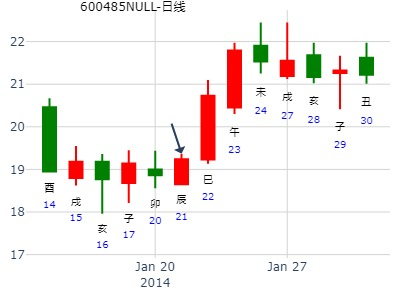
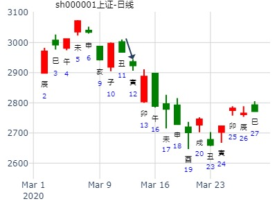
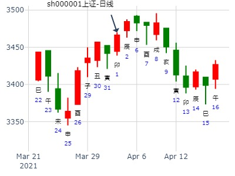

占事:晶方科技下周
时间: 2020-01-05 （21：43）
干支: 己亥年丙子月丁未日辛亥时 (旬空: 寅卯 )
节静卦
六神 伏神 本 卦
青龙 ▅▅ ▅▅ 兄弟子水
玄武 ▅▅▅▅▅ 官鬼戌土
白虎 ▅▅ ▅▅ 父母申金 应
腾蛇 ▅▅ ▅▅ 官鬼丑土
勾陈 ▅▅▅▅▅ 子孙卯木
朱雀 ▅▅▅▅▅ 妻财巳火 世
酉日冲卯暗动涨停。戌日墓世爻财爻。亥日日破。
公历：2023年1月15日16时14分 星期日
农历：壬寅年十二月廿四
干支：壬寅年 癸丑月 癸酉日 庚申时 日空：戌亥
占：1/16-31美国股市行情怎样？
【本卦】
六神 伏 神 坎宫：水泽节（六合）
白虎 ━ ━ 兄弟戊子
螣蛇 ━━━ 官鬼戊戌
勾陈 应 ━ ━ 父母戊申
朱雀 ━ ━ 官鬼丁丑
青龙 ━━━ 子孙丁卯 暗动
玄武 世 ━━━ 妻财丁巳
占事：600485中创信测22日--24日涨跌
公历起卦时间：2014年1月21日16时50分 (电脑自动)
干支：癸巳年 乙丑月 壬辰日 戊申时 （日空：午未）
神煞：驿马－寅 桃花－酉 日禄－亥 贵人－卯，巳
坎宫：水泽节 (六合)
六神 伏神 本 卦
白虎 兄弟戊子水 ▅▅ ▅▅
腾蛇 官鬼戊戌土 ▅▅▅▅▅
勾陈 父母戊申金 ▅▅ ▅▅ 应
朱雀 官鬼丁丑土 ▅▅ ▅▅
青龙 子孙丁卯木 ▅▅▅▅▅
玄武 妻财丁巳火 ▅▅▅▅▅ 世
隔天世爻值班就开涨。起卦月日倒影响不大。

问乙未年沪市大盘走势如何
公历起卦时间：2015年2月4日14时0分
干支：乙未年 戊寅月 辛亥日 乙未时 （日空：寅卯）
神煞：驿马－巳 桃花－子 日禄－酉 贵人－寅，午
坎宫：水泽节 (六合)
六神 伏神 本 卦
腾蛇 兄弟戊子水 ▅▅ ▅▅
勾陈 官鬼戊戌土 ▅▅▅▅▅
朱雀 父母戊申金 ▅▅ ▅▅ 应
青龙 官鬼丁丑土 ▅▅ ▅▅
玄武 子孙丁卯木 ▅▅▅▅▅
白虎 妻财丁巳火 ▅▅▅▅▅ 世
世爻暗动。

上海股市2016走势如何
公历起卦时间：2016年2月7日10时27分 (手工指定)
干支：丙申年 庚寅月 己未日 己巳时 （日空：子丑）
坎宫：水泽节 (六合)
六神 伏神 本 卦
勾陈 兄弟戊子水 ▅▅
朱雀 官鬼戊戌土 ▅▅▅
青龙 父母戊申金 ▅▅
玄武 官鬼丁丑土 ▅▅
白虎 子孙丁卯木 ▅▅▅
腾蛇 妻财丁巳火 ▅▅▅
申年合财，寅月生财，全年小涨
我摇的中信证券 3月2日到6日
干支：庚子年 戊寅月 癸卯日 癸亥时 (卦身：午)
主 水泽节(坎宫) [空亡:辰、巳]
白虎 ▅▅ ▅▅ 兄弟戊子水
螣蛇 ▅▅▅▅▅ 官鬼戊戌土
勾陈 ▅▅ ▅▅ 父母戊申金 应
朱雀 ▅▅ ▅▅ 官鬼丁丑土
青龙 ▅▅▅▅▅ 子孙丁卯木
玄武 ▅▅▅▅▅ 妻财丁巳火 世
世爻空亡，但次日出空开涨。旬空可能影响只涨一周。
占事：600598
起卦方式：摇卦
公历时间：2004年3月2日14时21分
农历时间：甲申年二月十二未时
干支：甲申年 丙寅月 庚辰日 癸未时 (旬空：申酉)
神煞：驿马—寅 桃花—酉 日禄—申 贵人—寅，午
坎宫：水泽节（六合）
六神 【本 卦】
螣蛇 ▅▅ ▅▅ 兄弟戊子水
勾陈 ▅▅▅▅▅ 官鬼戊戌土
朱雀 ▅▅ ▅▅ 父母戊申金 应
青龙 ▅▅ ▅▅ 官鬼丁丑土
玄武 ▅▅▅▅▅ 子孙丁卯木
白虎 ▅▅▅▅▅ 妻财丁巳火 世
000988华工科技卯月走势——乾隆币卦
华工科技卯月走势
公历时间：2016年3月2日13时42分
干 支：丙申年 庚寅月 癸未日 己未时
旬 空：辰巳 午未 (申酉) 子丑
坎宫：水泽节（六合）
六神 【本 卦】
白虎 ▄▄ ▄▄ 兄弟戊子水
螣蛇 ▄▄▄▄▄ 官鬼戊戌土
勾陈 ▄▄ ▄▄ 父母戊申金 应
朱雀 ▄▄ ▄▄ 官鬼丁丑土
青龙 ▄▄▄▄▄ 子孙丁卯木
玄武 ▄▄▄▄▄ 妻财丁巳火 世
锐奇股份2016走势 （年卦）
起卦方式：手工指定 300126
公历时间：2016年3月4日16时41分
干 支：丙申年 庚寅月 乙酉日 甲申时
旬 空：辰巳 午未 (午未) 午未
坎宫：水泽节（六合）
六神 【本 卦】
玄武 ▄▄ ▄▄ 兄弟戊子水
白虎 ▄▄▄▄▄ 官鬼戊戌土
螣蛇 ▄▄ ▄▄ 父母戊申金 应
勾陈 ▄▄ ▄▄ 官鬼丁丑土
朱雀 ▄▄▄▄▄ 子孙丁卯木
青龙 ▄▄▄▄▄ 妻财丁巳火 世
占事：测登云股份3.9-3.13
时间: 2015-03-07
干支: 乙未年己卯月壬午日丙午时 (旬空: 申酉 )
节静卦
白虎 ▅▅ ▅▅ 兄弟子水
腾蛇 ▅▅▅▅▅ 官鬼戌土
勾陈 ▅▅ ▅▅ 父母申金 应
朱雀 ▅▅ ▅▅ 官鬼丑土
青龙 ▅▅▅▅▅ 子孙卯木
玄武 ▅▅▅▅▅ 妻财巳火 世
占问事宜：312下午走势
公历：2020年3月12日12时52分，星期四。
干支：庚子年 己卯月 甲寅日 庚午时 (卦身：午)
主 水泽节(坎宫) [空亡:子、丑]
玄武 ▅▅ ▅▅ 兄弟戊子水
白虎 ▅▅▅▅▅ 官鬼戊戌土
螣蛇 ▅▅ ▅▅ 父母戊申金 应
勾陈 ▅▅ ▅▅ 官鬼丁丑土
朱雀 ▅▅▅▅▅ 子孙丁卯木
青龙 ▅▅▅▅▅ 妻财丁巳火 世
涨

求测人：教授
起卦方式：铜钱摇卦
占问事宜：300096易联众下周
起卦公历：2015年3月13日19时34分(北京时间)。
起卦农历：乙未年 正月 廿三日 戌时。
干支： 乙未年 己卯月 戊子日 壬戌时 (卦身：午)
主变卦 水泽节(坎宫) [空亡:午、未]
朱雀 ━ ━ 兄弟戊子水
青龙 ━━━ 官鬼戊戌土
玄武 ━ ━ 父母戊申金 应
白虎 ━ ━ 官鬼丁丑土
螣蛇 ━━━ 子孙丁卯木
勾陈 ━━━ 妻财丁巳火 世
主题：龙元建设在十天内的走势
乙未 己卯 乙巳 甲申 (寅卯空)
乙未年二月十一
(2015/03/30 16:35:00)
水泽节
玄武 兄弟子水 ∥
白虎 官鬼戌土 ／
腾蛇 父母戊申 ∥ 应
勾陈 官鬼丑土 ∥
朱雀 子孙卯木 ／
青龙 妻财巳火 ／ 世
占事：4.2上证收盘走势
公历起卦时间：2021年4月1日22时24分 (电脑自动)
干支：辛丑年 辛卯月 己卯日 乙亥时 （日空：申酉）
神煞：驿马－巳 桃花－子 日禄－午 贵人－子，申
坎宫：水泽节 (六合)
六神 伏神 本 卦
勾陈 兄弟戊子水 ▅▅ ▅▅
朱雀 官鬼戊戌土 ▅▅▅▅▅
青龙 父母戊申金 ▅▅ ▅▅ 应
玄武 官鬼丁丑土 ▅▅ ▅▅
白虎 子孙丁卯木 ▅▅▅▅▅
螣蛇 妻财丁巳火 ▅▅▅▅▅ 世

占事：2017.4.5-14大盘走势 起卦方式：手动摇卦
公历时间：2017年4月5日12时31分
干 支：丁酉年 甲辰月 壬戌日 丙午时
旬 空：辰巳 寅卯 (子丑) 寅卯
坎宫：水泽节（六合）
六神 【本 卦】
白虎 ▄▄ ▄▄ 兄弟戊子水
螣蛇 ▄▄▄▄▄ 官鬼戊戌土
勾陈 ▄▄ ▄▄ 父母戊申金 应
朱雀 ▄▄ ▄▄ 官鬼丁丑土
青龙 ▄▄▄▄▄ 子孙丁卯木
玄武 ▄▄▄▄▄ 妻财丁巳火 世
-----雄安新区，白洋淀为水泽节之象也。
占事：测600081东风科技在4.22-4.26走势
公历起卦时间：2019年4月21日16时53分 (手工指定)
干支：己亥年 戊辰月 戊子日 庚申时 （日空：午未）
神煞：驿马－寅 桃花－酉 日禄－巳 贵人－丑，未
坎宫：水泽节 (六合)
六神 伏神 本 卦
朱雀 兄弟戊子水 ▅▅ ▅▅
青龙 官鬼戊戌土 ▅▅▅▅▅
玄武 父母戊申金 ▅▅ ▅▅ 应
白虎 官鬼丁丑土 ▅▅ ▅▅
腾蛇 子孙丁卯木 ▅▅▅▅▅
勾陈 妻财丁巳火 ▅▅▅▅▅ 世
占事：上证股市最近二周如何？
公历起卦时间：2016年4月21日19时21分 (在线摇卦)
干支：丙申年 壬辰月 癸酉日 壬戌时 （日空：戌亥）
坎宫：水泽节 (六合)
六神 伏神 本 卦
白虎 兄弟戊子水 ▅▅ ▅▅
腾蛇 官鬼戊戌土 ▅▅▅▅▅
勾陈 父母戊申金 ▅▅ ▅▅ 应
朱雀 官鬼丁丑土 ▅▅ ▅▅
青龙 子孙丁卯木 ▅▅▅▅▅
玄武 妻财丁巳火 ▅▅▅▅▅ 世
云南铜业4.29壬子五-5.6己未五中三个交易日哪日顶？
公历起卦时间：2022年5月2日15时34分 (电脑自动)
干支：壬寅年 甲辰月 乙卯日 甲申时 （日空：子丑）
神煞：驿马－巳 桃花－子 日禄－卯 贵人－子，申
坎宫：水泽节 (六合)
六神 伏神 本 卦
玄武 兄弟戊子水 ▅▅ ▅▅
白虎 官鬼戊戌土 ▅▅▅▅▅
螣蛇 父母戊申金 ▅▅ ▅▅ 应
勾陈 官鬼丁丑土 ▅▅ ▅▅
朱雀 子孙丁卯木 ▅▅▅▅▅
青龙 妻财丁巳火 ▅▅▅▅▅ 世
5.13上证当天
时间: 2021-05-12
干支: 辛丑年癸巳月庚申日 (旬空: 子丑 )
节静卦
六神 伏神 本 卦
腾蛇 ▅▅ ▅▅ 兄弟子水
勾陈 ▅▅▅▅▅ 官鬼戌土
朱雀 ▅▅ ▅▅ 父母申金 应
青龙 ▅▅ ▅▅ 官鬼丑土
玄武 ▅▅▅▅▅ 子孙卯木
白虎 ▅▅▅▅▅ 妻财巳火 世
占事：本周上证指数走势
起卦方式：手工指定
公历时间：2022年5月23日8时12分
干 支：壬寅年 乙巳月 丙子日 壬辰时
旬 空：辰巳 寅卯 申酉 午未
神 煞：驿马─寅 桃花─酉 日禄─巳 贵人─酉，亥
坎宫：水泽节（六合）
六神 【本 卦】
青龙 ▄▄ ▄▄ 兄弟戊子水
玄武 ▄▄▄▄▄ 官鬼戊戌土
白虎 ▄▄ ▄▄ 父母戊申金 应
螣蛇 ▄▄ ▄▄ 官鬼丁丑土
勾陈 ▄▄▄▄▄ 子孙丁卯木
朱雀 ▄▄▄▄▄ 妻财丁巳火 世
断：周一冲高回落，收阳；
周二回调，收阴；
周三见底回升，收阳；
周四小幅回升，收阳；
周五回调，收阴；
占事：600242中昌数据下午跟明天涨跌
公历起卦时间：2017年5月24日12时13分 (电脑自动)
干支：丁酉年 乙巳月 辛亥日 甲午时 （日空：寅卯）
神煞：驿马－巳 桃花－子 日禄－酉 贵人－寅，午
坎宫：水泽节 (六合)
六神 伏神 本 卦
腾蛇 兄弟戊子水 ▅▅ ▅▅
勾陈 官鬼戊戌土 ▅▅▅▅▅
朱雀 父母戊申金 ▅▅ ▅▅ 应
青龙 官鬼丁丑土 ▅▅ ▅▅
玄武 子孙丁卯木 ▅▅▅▅▅
白虎 妻财丁巳火 ▅▅▅▅▅ 世
占事：000798中水渔业下午跟明天涨跌
公历起卦时间：2016年5月25日11时54分 (电脑自动)
干支：丙申年 癸巳月 丁未日 丙午时 （日空：寅卯）
神煞：驿马－巳 桃花－子 日禄－午 贵人－酉，亥
坎宫：水泽节 (六合)
六神 伏神 本 卦
青龙 兄弟戊子水 ▅▅ ▅▅
玄武 官鬼戊戌土 ▅▅▅▅▅
白虎 父母戊申金 ▅▅ ▅▅ 应
腾蛇 官鬼丁丑土 ▅▅ ▅▅
勾陈 子孙丁卯木 ▅▅▅▅▅
朱雀 妻财丁巳火 ▅▅▅▅▅ 世
方大炭素何时上冲6.80？
公历起卦时间：2020年6月17日9时2分 (电脑自动)
干支：庚子年 壬午月 辛卯日 癸巳时 （日空：午未）
神煞：驿马－巳 桃花－子 日禄－酉 贵人－寅，午
坎宫：水泽节 (六合)
六神 伏神 本 卦
螣蛇 兄弟戊子水 ▅▅ ▅▅
勾陈 官鬼戊戌土 ▅▅▅▅▅
朱雀 父母戊申金 ▅▅ ▅▅ 应
青龙 官鬼丁丑土 ▅▅ ▅▅
玄武 子孙丁卯木 ▅▅▅▅▅
白虎 妻财丁巳火 ▅▅▅▅▅ 世
以下是引用金眼牛在2007-7-13 22:21:00的发言：
占事：7月16-20日大盘涨跌
公历时间：2007年7月13日15时15分 星期五
干支：丁亥年 丁未月 戊申日 庚申时 (旬空：寅卯)
神煞：驿马—寅 桃花—酉 日禄—巳 贵人—丑，未
坎宫：水泽节（六合）
六神 【本 卦】
朱雀 ▅▅ ▅▅ 兄弟戊子水
青龙 ▅▅▅▅▅ 官鬼戊戌土
玄武 ▅▅ ▅▅ 父母戊申金 应
白虎 ▅▅ ▅▅ 官鬼丁丑土
螣蛇 ▅▅▅▅▅ 子孙丁卯木
勾陈 ▅▅▅▅▅ 妻财丁巳火 世
上证壬寅年午未申月哪月顶？
公历起卦时间：2022年7月21日10时7分 (电脑自动)
干支：壬寅年 丁未月 乙亥日 辛巳时 （日空：申酉）
神煞：驿马－巳 桃花－子 日禄－卯 贵人－子，申
坎宫：水泽节 (六合)
六神 伏神 本 卦
玄武 兄弟戊子水 ▅▅ ▅▅
白虎 官鬼戊戌土 ▅▅▅▅▅
螣蛇 父母戊申金 ▅▅ ▅▅ 应
勾陈 官鬼丁丑土 ▅▅ ▅▅
朱雀 子孙丁卯木 ▅▅▅▅▅
青龙 妻财丁巳火 ▅▅▅▅▅ 世
水泽节静卦，测登云股份3.9-3.13走势。
公历起卦时间：2015年8月17日8时47分 (电脑自动)
干支：乙未年 甲申月 乙丑日 庚辰时 （日空：戌亥）
坎宫：水泽节(六合)
六神 伏神 本 卦
玄武 兄弟戊子水▅▅ ▅▅
白虎 官鬼戊戌土▅▅▅▅▅
腾蛇 父母戊申金▅▅ ▅▅应
勾陈 官鬼丁丑土▅▅ ▅▅
朱雀 子孙丁卯木▅▅▅▅▅
青龙 妻财丁巳火▅▅▅▅▅世
18日寅日暴跌，应在冲应爻申金暗动。
19日卯日当值，无酉金可冲，看涨一天。
第七期9月1日到5日预测上证指数比赛
公历时间：2008年9月1日9时30分 星期一
干支：戊子年 庚申月 甲辰日 己巳时 (旬空：寅卯)
神煞：驿马—寅 桃花—酉 日禄—寅 贵人—丑，未
坎宫：水泽节（六合）
六神 【本 卦】
玄武 ▅▅ ▅▅ 兄弟戊子水
白虎 ▅▅▅▅▅ 官鬼戊戌土
螣蛇 ▅▅ ▅▅ 父母戊申金 应
勾陈 ▅▅ ▅▅ 官鬼丁丑土
朱雀 ▅▅▅▅▅ 子孙丁卯木
青龙 ▅▅▅▅▅ 妻财丁巳火 世
这是大盘
占事：600963未来二个月走势？
招财公主 钱币卦
起卦方式：手工指定
公历时间：2014年9月2日15时32分
干 支：甲午年 壬申月 丙子日 丙申时
旬 空：辰巳 戌亥 (申酉) 辰巳
坎宫：水泽节（六合）
六神 【本 卦】
青龙 ▄▄ ▄▄ 兄弟戊子水
玄武 ▄▄▄▄▄ 官鬼戊戌土
白虎 ▄▄ ▄▄ 父母戊申金 应
螣蛇 ▄▄ ▄▄ 官鬼丁丑土
勾陈 ▄▄▄▄▄ 子孙丁卯木
朱雀 ▄▄▄▄▄ 妻财丁巳火 世
9月7-9月11号大盘预测
2020-09-06
干支：庚子年 甲申月 壬子日 乙巳时 日空亡：寅卯
神煞：驿马－寅 桃花－酉 日禄－亥 贵人－卯，巳
坎宫：水泽节 (六合)
六神 伏神 本 卦
白虎 兄弟子水 ▅▅ ▅▅
螣蛇 官鬼戌土 ▅▅▅▅▅
勾陈 父母申金 ▅▅ ▅▅ 应
朱雀 官鬼丑土 ▅▅ ▅▅
青龙 子孙卯木 ▅▅▅▅▅
玄武 妻财巳火 ▅▅▅▅▅ 世
第十期9月22日到26日上证指数比赛
公历时间：2008年9月22日9时30分 星期一
干支：戊子年 辛酉月 乙丑日 辛巳时 (旬空：戌亥)
神煞：驿马—亥 桃花—午 日禄—卯 贵人—子，申
坎宫：水泽节（六合）
六神 【本 卦】
玄武 ▅▅ ▅▅ 兄弟戊子水
白虎 ▅▅▅▅▅ 官鬼戊戌土
螣蛇 ▅▅ ▅▅ 父母戊申金 应
勾陈 ▅▅ ▅▅ 官鬼丁丑土
朱雀 ▅▅▅▅▅ 子孙丁卯木
青龙 ▅▅▅▅▅ 妻财丁巳火 世 这是大盘
节静卦
占事: 300139未来二周
时间: 2021-10-14
干支: 辛丑年戊戌月乙未日癸未时 (旬空: 辰巳 )
节静卦
六神 伏神 本 卦
玄武 ▅▅ ▅▅ 兄弟子水
白虎 ▅▅▅▅▅ 官鬼戌土
腾蛇 ▅▅ ▅▅ 父母申金 应
勾陈 ▅▅ ▅▅ 官鬼丑土
朱雀 ▅▅▅▅▅ 子孙卯木
青龙 ▅▅▅▅▅ 妻财巳火 世
占事：3382 -11月2-6沪市大盘
公历时间：2015年10月30日15时14分
干 支：乙未年 丙戌月 己卯日 壬申时
旬 空：辰巳 午未 (申酉) 戌亥
神 煞：驿马─巳 桃花─子 日禄─午 贵人─子，申
坎宫：水泽节（六合）
六神 【本 卦】
勾陈 ▄▄ ▄▄ 兄弟戊子水
朱雀 ▄▄▄▄▄ 官鬼戊戌土
青龙 ▄▄ ▄▄ 父母戊申金 应
玄武 ▄▄ ▄▄ 官鬼丁丑土
白虎 ▄▄▄▄▄ 子孙丁卯木
螣蛇 ▄▄▄▄▄ 妻财丁巳火 世
六合财持世，可惜财爻不旺，防周二周五鬼值日下跌调整。
指数上看整体应该是平稳的一周。
占事：航天军工7日涨跌
注：以航天发展代表
公历起卦时间：2013年11月6日15时37分 (电脑自动)
干支：癸巳年 壬戌月 丙子日 丙申时 （日空：申酉）
神煞：驿马－寅 桃花－酉 日禄－巳 贵人－酉，亥
坎宫：水泽节 (六合)
六神 伏神 本 卦
青龙 兄弟戊子水 ▅▅ ▅▅
玄武 官鬼戊戌土 ▅▅▅▅▅
白虎 父母戊申金 ▅▅ ▅▅ 应
腾蛇 官鬼丁丑土 ▅▅ ▅▅
勾陈 子孙丁卯木 ▅▅▅▅▅
朱雀 妻财丁巳火 ▅▅▅▅▅ 世
占事: 上证未来二周
时间: 2022-11-17
干支: 壬寅年辛亥月甲戌日壬申时 (旬空: 申酉 )
节静卦
六神 伏神 本 卦
玄武 ▅▅ ▅▅ 兄弟子水
白虎 ▅▅▅▅▅ 官鬼戌土
腾蛇 ▅▅ ▅▅ 父母申金 应
勾陈 ▅▅ ▅▅ 官鬼丑土
朱雀 ▅▅▅▅▅ 子孙卯木
青龙 ▅▅▅▅▅ 妻财巳火 世
中航飞机000768下周涨跌
手摇卦 起卦方式：手动摇卦
公历时间：2019年11月28日20时38分
干 支：己亥年 乙亥月 己巳日 甲戌时
旬 空：辰巳 申酉 戌亥 申酉
神 煞：驿马─亥 桃花─午 日禄─午 贵人─子，申
坎宫：水泽节（六合）
六神 【本 卦】
勾陈 ▄▄ ▄▄ 兄弟戊子水
朱雀 ▄▄▄▄▄ 官鬼戊戌土
青龙 ▄▄ ▄▄ 父母戊申金 应
玄武 ▄▄ ▄▄ 官鬼丁丑土
白虎 ▄▄▄▄▄ 子孙丁卯木
螣蛇 ▄▄▄▄▄ 妻财丁巳火 世
明天周三涨跌
公历时间：2020年12月1日15时40分
干 支：庚子年 丁亥月 戊寅日 庚申时
旬 空：辰巳 午未 申酉 子丑
神 煞：驿马─申 桃花─卯 日禄─巳 贵人─丑，未
坎宫：水泽节（六合）
六神 【本 卦】
朱雀 ▄▄ ▄▄ 兄弟戊子水
青龙 ▄▄▄▄▄ 官鬼戊戌土
玄武 ▄▄ ▄▄ 父母戊申金 应
白虎 ▄▄ ▄▄ 官鬼丁丑土
螣蛇 ▄▄▄▄▄ 子孙丁卯木
勾陈 ▄▄▄▄▄ 妻财丁巳火 世
从子水月卦看，上证猴年的反弹将止步在3300点
本帖最后由 胡子 于 2016-12-4 10:11 编辑
起卦方式：铜钱摇卦
公历时间：2016年12月4日9时42分
干 支：丙申年 己亥月 庚申日 辛巳时
旬 空：辰巳 辰巳 (子丑) 申酉
坎宫：水泽节（六合）
六神 【本 卦】
螣蛇 ▄▄ ▄▄ 兄弟戊子水
勾陈 ▄▄▄▄▄ 官鬼戊戌土
朱雀 ▄▄ ▄▄ 父母戊申金 应
青龙 ▄▄ ▄▄ 官鬼丁丑土
玄武 ▄▄▄▄▄ 子孙丁卯木
白虎 ▄▄▄▄▄ 妻财丁巳火 世
盛德鑫泰明天最高价
公历起卦时间：2021年12月12日19时31分 (手工指定)
干支：辛丑年 庚子月 甲午日 甲戌时 （日空：辰巳）
神煞：驿马－申 桃花－卯 日禄－寅 贵人－丑，未
坎宫：水泽节 (六合)
六神 伏神 本 卦
玄武 兄弟戊子水 ▅▅ ▅▅
白虎 官鬼戊戌土 ▅▅▅▅▅
螣蛇 父母戊申金 ▅▅ ▅▅ 应
勾陈 官鬼丁丑土 ▅▅ ▅▅
朱雀 子孙丁卯木 ▅▅▅▅▅
青龙 妻财丁巳火 ▅▅▅▅▅ 世
试测12.20上证收盘个位数？
公历起卦时间：2021年12月16日19时18分 (电脑自动)
干支：辛丑年 庚子月 戊戌日 壬戌时 （日空：辰巳）
神煞：驿马－申 桃花－卯 日禄－巳 贵人－丑，未
坎宫：水泽节 (六合)
六神 伏神 本 卦
朱雀 兄弟戊子水 ▅▅ ▅▅
青龙 官鬼戊戌土 ▅▅▅▅▅
玄武 父母戊申金 ▅▅ ▅▅ 应
白虎 官鬼丁丑土 ▅▅ ▅▅
螣蛇 子孙丁卯木 ▅▅▅▅▅
勾陈 妻财丁巳火 ▅▅▅▅▅ 世